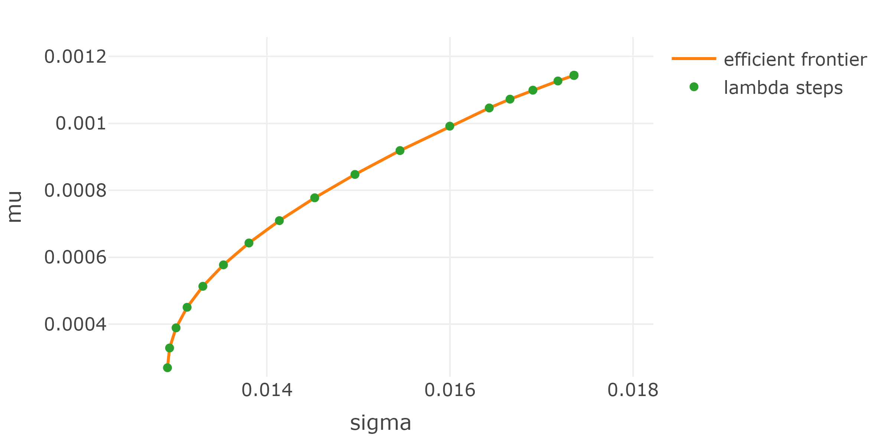
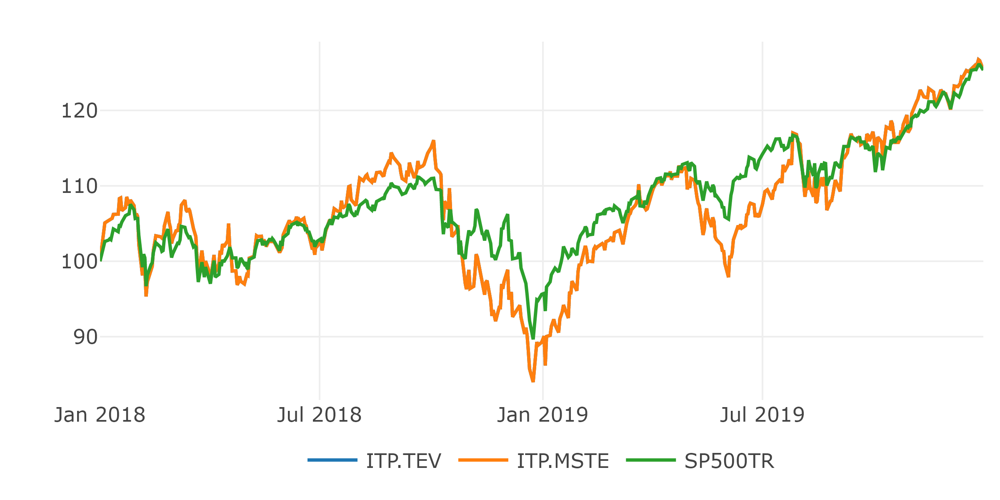

Chapter 6 Challenges of Passiv Investing
In this chapter, two common challenges of passive investing are analyzed to create simple use cases for testing the PSO. The first challenge is the mean-variance portfolio (MVP) from Markowitz’s modern portfolio theory, which, simply put, is an optimal allocation of assets in terms of risk and return. The second challenge is the index tracking problem, which attempts to construct a portfolio with minimal tracking error to a given benchmark.
6.1 Mean-Variance Portfolio (MVP)
Markowitz showed that diversifying risk across multiple assets reduces overall portfolio risk. This result was the beginning of the widely used modern portfolio theory, which uses mathematical models to create portfolios with minimal variance for a given return target. All such optimal portfolios for a given return target are called efficient and constitute the efficient frontier. The problem behind Markowitz’s original MVP without constraints can be solved in a closed form, which is explained in (Zivot 2021). This type of MVP has no practical use, so only MVP problems with constraints and without closed forms are of interest in this thesis.
6.1.1 MVP: Problem
Let there be \(N\) assets and their returns on \(T\) different days, creating a return matrix \(R \in \mathbb{R}^{T \times N}\). Each element \(R_{t,i}\) contains the return of the \(i\)-th asset on day \(t\). The estimated covariance matrix of the returns is \(\textstyle\sum \in \mathbb{R}^{N \times N}\) and the estimation of the expected returns are \(\mu \in \mathbb{R}^{N}\). The MVP problem with the risk aversion parameter \(\lambda \in [0,1]\), as shown in (Maringer 2005), can be formalized as follows: \[\begin{equation} \underset{w}{min} \ \ \ \lambda \ w^T \textstyle\sum w - (1-\lambda) \ \mu^T w \tag{6.1} \end{equation}\]
The risk aversion parameter \(\lambda\) defines the tradeoff between risk and return. With \(\lambda = 1\), the minimization problem contains only the variance term, leading to a minimum variance portfolio, and \(\lambda = 0\) transforms the problem into a minimization of negative expected returns, leading to a maximum return portfolio. All possible portfolios created by \(\lambda \in [0, 1]\) define the efficient frontier.
6.1.2 MVP: Example
All possible MVP’s together define the efficient frontier, which is analyzed in this section without going into the details of its calculation. This example uses three assets (stocks: IBM, Google, Apple) and calculates the MVP for each \(\lambda\). First, the daily returns of these three assets from 2018-01-01 to 2019-12-31 are loaded.
returns <- buffer(
get_yf(tickers = c("IBM", "GOOG", "AAPL"), from = "2018-01-01", to = "2019-12-31")$returns,
"CPI_3_assets"
)The cumulative daily returns are:
The expected daily returns and the covariance matrix for the three assets can be estimated using the formulas from chapter 4:
mu <- ret_to_geomeanret(returns)
cat0("estimation of expected daily returns:")
mu
cat("\n")
cov <- as.matrix(nearPD(cov_(returns, mu))$mat)
cat0("estimation of positiv definite covariance matrix:")
covestimation of expected daily returns:
AAPL IBM GOOG
0.0011434115 -0.0001059164 0.0004870292
estimation of positiv definite covariance matrix:
AAPL IBM GOOG
AAPL 0.0003012226 0.0001177826 0.0001799097
IBM 0.0001177826 0.0002047608 0.0001158735
GOOG 0.0001799097 0.0001158735 0.0002728911This is all the data necessary to solve the MVP problem with \(\lambda \in \{0.01, 0.02, ..., 0.99, 1\}\). All 100 portfolios are computed by solving a quadratic minimization problem with the long only (\(w_i \geq 0 \ \forall \ i\)) constraint and the weights should sum to 1.
portfolios <- data.frame()
mu_and_var <- NULL
for(lambda in seq(0.01,1, 0.01)){
mat <- list(
Dmat = lambda * cov,
dvec = (1 - lambda) * mu,
Amat = t(rbind(
rep(1, ncol(returns)), # sum up to 1
diag(1, nrow=ncol(returns), ncol=ncol(returns)) # long only
)),
bvec = c(
1, # sum up to 1
rep(0, ncol(returns)) # long only
),
meq = 1
)
qp <- solve.QP(Dmat = mat$Dmat, dvec = mat$dvec, Amat = mat$Amat, bvec = mat$bvec, meq = mat$meq)
port <- xts(returns %*% qp$solution, order.by=index(returns))
mu_and_var <- rbind(
mu_and_var,
data.frame("lambda" = lambda, "mu" = mu %*% qp$solution, "sd" = sqrt(t(qp$solution) %*% cov %*% qp$solution))
)
portfolios <- rbind(
portfolios,
qp$solution
)
}
portfolios <- data.frame(portfolios)
colnames(portfolios) <- colnames(returns)The resulting portfolios are plotted in the daily \(\mu\)-\(\sigma\) diagram to create the efficient frontier:
plot_ly(data = mu_and_var, type = 'scatter', mode="lines+markers") %>%
add_lines(y = ~mu, x = ~sd, name = "efficient frontier", mode="lines", type = 'scatter') %>%
add_trace(x = ~sd, y=~mu, mode="markers", name = "lambda steps", type = 'scatter') %>%
layout(
yaxis = list(title=list(text = "mu", standoff = 10L), range=c(min(mu_and_var$mu)*0.9, max(mu_and_var$mu)*1.1)),
xaxis = list(title=list(text = "sigma", standoff = 10L), range=c(min(mu_and_var$sd)*0.95, max(mu_and_var$sd)*1.05))
) %>%
#config(mathjax = 'cdn') %>%
html_save()
The portfolio compositions for each \(\lambda\) are:
p <- plot_ly(type="bar") %>%
layout(barmode="stack", xaxis = list(title="lambda", autorange = "reversed"), yaxis = list(title="weight"), margin=list(b=70))
for(i in 1:ncol(portfolios)){
p <- p %>%
add_trace(x=seq(0.01,1, 0.01), y=portfolios[, i], name = colnames(portfolios)[i])
}
p %>%
config(mathjax = 'cdn') %>%
html_save()It can be observed that the portfolio with the lowest variance was obtained with a diversified composition of the three assets. With gradually decreasing \(\lambda\), the minimization problem starts to ignore the variance, which leads to a portfolio investing more in the riskiest asset with the highest return.
6.1.3 MVP: Compare Estimators
The above solution for the MVP problem was performed using a geometric mean to estimate the expected returns \(\mu\) and was also used in the estimation of the covariance \(\textstyle\sum\). This raises the question of whether the result is different from the classical approach of estimating these parameters using the arithmetic mean. The following plot illustrates the efficient frontier created from the MVP’s as a function of \(\lambda\) using the arithmetic mean versus the geometric mean to estimate \(\mu\). The weights of the MVP’s using the geometric mean are used to calculate \(\mu\) and \(\sigma\) as a function of the arithmetic mean to make both efficient frontiers comparable:
cov_ <- function(mat, mean_vec=NULL){
if(is.null(mean_vec)){
mat_mean <- matrix(data=1, nrow=nrow(mat)) %*% apply(mat, 2, mean)
}else{
mat_mean <- matrix(data=1, nrow=nrow(mat)) %*% mean_vec
}
mat <- mat - mat_mean
return((nrow(mat)-1)^(-1) * t(mat) %*% mat)
}
returns <- buffer(
get_yf(tickers = c("IBM", "GOOG", "AAPL"), from = "2018-01-01", to = "2019-12-31")$returns,
"CPI_3_assets"
)
# save geo to compare results
mu_arit <- apply(returns, 2, mean) #ret_to_geomeanret(returns)
cov_arit <- cov(returns)
mu <- ret_to_geomeanret(returns) #apply(returns, 2, mean) #ret_to_geomeanret(returns)
cov <- cov_(returns, mean_vec = mu)
portfolios <- data.frame()
mu_and_var <- NULL
for(lambda in seq(0.01,1, 0.01)){
mat <- list(
Dmat = lambda * cov,
dvec = (1 - lambda) * mu,
Amat = t(rbind(
rep(1, ncol(returns)), # sum up to 1
diag(1, nrow=ncol(returns), ncol=ncol(returns)) # long only
)),
bvec = c(
1, # sum up to 1
rep(0, ncol(returns)) # long only
),
meq = 1
)
qp <- solve.QP(Dmat = mat$Dmat, dvec = mat$dvec, Amat = mat$Amat, bvec = mat$bvec, meq = mat$meq)
port <- xts(returns %*% qp$solution, order.by=index(returns))
mu_and_var <- rbind(
mu_and_var,
data.frame("lambda" = lambda, "mu" = mu_arit %*% qp$solution, "sd" = sqrt(t(qp$solution) %*% cov_arit %*% qp$solution))
)
portfolios <- rbind(
portfolios,
qp$solution
)
}
portfolios <- data.frame(portfolios)
colnames(portfolios) <- colnames(returns)
all <- data.frame(type="geo_mean", mu_and_var)
mu <- apply(returns, 2, mean)
cov <- cov(returns)
portfolios <- data.frame()
mu_and_var <- NULL
for(lambda in seq(0.01,1, 0.01)){
mat <- list(
Dmat = lambda * cov,
dvec = (1 - lambda) * mu,
Amat = t(rbind(
rep(1, ncol(returns)), # sum up to 1
diag(1, nrow=ncol(returns), ncol=ncol(returns)) # long only
)),
bvec = c(
1, # sum up to 1
rep(0, ncol(returns)) # long only
),
meq = 1
)
qp <- solve.QP(Dmat = mat$Dmat, dvec = mat$dvec, Amat = mat$Amat, bvec = mat$bvec, meq = mat$meq)
port <- xts(returns %*% qp$solution, order.by=index(returns))
mu_and_var <- rbind(
mu_and_var,
data.frame("lambda" = lambda, "mu" = mu_arit %*% qp$solution, "sd" = sqrt(t(qp$solution) %*% cov_arit %*% qp$solution))
)
portfolios <- rbind(
portfolios,
qp$solution
)
}
portfolios <- data.frame(portfolios)
colnames(portfolios) <- colnames(returns)
all <- rbind(all, data.frame(type="arith_mean", mu_and_var))
plot_ly(data = all, type = 'scatter', mode="lines+markers", y = ~mu, x = ~sd, name=~type) %>%
# add_lines(data = all %>% filter(type=="geo_mean"), y = ~mu, x = ~sd, name="geo_mean", type = 'scatter', mode="lines+markers") %>%
# #add_trace(data = all %>% filter(type=="geo_mean"), x = ~sd, y=~mu, name="geo_mean", mode="markers", type = 'scatter') %>%
# add_lines(data = all %>% filter(type=="arith_mean"), y = ~mu, x = ~sd, name="arith_mean", type = 'scatter', mode="lines+markers") %>%
#add_trace(data = all %>% filter(type=="arith_mean"), x = ~sd, y=~mu, name="arith_mean", mode="markers", type = 'scatter') %>%
# add_lines(data = all %>% filter(type=="geo_mean_and_cov_with_arith"), y = ~mu, x = ~sd, name="geo_mean_and_cov_with_arith", mode="lines", type = 'scatter') %>%
# add_trace(data = all %>% filter(type=="geo_mean_and_cov_with_arith"), x = ~sd, y=~mu, name="geo_mean_and_cov_with_arith", mode="markers", type = 'scatter') %>%
layout(
#title = "3-Asset MVP: arith_mean or geo_mean",
yaxis = list(title=list(text = "mu (arithmetic)", standoff = 10L), range=c(min(mu_and_var$mu)*0.9, max(mu_and_var$mu)*1.1)),
xaxis = list(title=list(text = "sigma (arithmetic)", standoff = 10L), range=c(min(mu_and_var$sd)*0.95, max(mu_and_var$sd)*1.05))#,
# margin = list(
# l = 10,
# r = 10,
# b = 70,
# t = 50,
# pad = 4
# )
) %>%
config(mathjax = 'cdn') %>%
html_save()It can be seen, that both estimators produce portfolios on the same efficient frontier. If the aim of the MVP is to generate a portfolio with minimal variance for a given return target, the type of return needs to be specified to use the geometric or arithmetic mean. This specification will determine the type of estimator needed for the MVP. This analogy is not needed in the scope of this thesis, because the more generic portfolios specified with \(\lambda\) are sufficient to create test-cases for the PSO. The later examples with the MVP will always use the geometric mean returns as estimation for the expected returns.
6.2 Index-Tracking Portfolio (ITP)
Indices are baskets of assets that are used to track the performance of a particular asset group. For example, the well-known Standard and Poor’s 500 Index (S&P 500 for short) tracks the 500 largest companies in the United States. Indices are not for sale and serve only to visualize the performance of a particular asset group, without incurring transaction costs. Such indices, or a combination of indices, are used by asset managers as benchmarks to compare the performance of their funds. Each fund has its own benchmark, which contains roughly the same assets that the manager might buy. If the fund underperforms its benchmark, it may indicate that the fund manager has made poor decisions. Therefore, fund managers strive to outperform their benchmarks through carefully selected investments. Past experience has shown that this is rarely achieved with active management by cost (Desmond Pace and Grima 2016b). This has led to the growing popularity of passively managed funds whose goal is to track their benchmarks as closely as possible. This can be achieved through either full or sparse replication. Full replication is a portfolio that contains all the assets in the benchmark with the same weightings. The resulting performance equals the performance of the benchmark when transaction costs are neglected. The first problem is that a benchmark may contain assets that are not liquid or cannot be purchased. The second problem is the weighting scheme of the indices, because they are often weighted by their market capitalization, which changes daily. This would result in the need to reblanance daily and increase transaction costs to replicate the performance of the benchmark as closely as possible. To avoid this, sparse replications are used that contain only a fraction of the benchmark’s assets. To do so, the portfolio manager must define his benchmark, which should overlap with the investment universe of his fund. He then reduces this universe, taking into account investor constraints and availability, to create a pool of possible assets. For example, a pool that replicates the S&P 500 might consist of the one hundred highest-weighted assets in the S&P 500. The ITP can be modeled in two ways analysed in (Iuliia Gavriushina 2019).
6.2.1 ITP with TEV objective (ITP-TEV)
The classic and widely used model tries to reduce the tracking error variance (TEV) with the following formula: \[ \min \ \ Var(\pmb{TE}) = Var(\pmb{R}_{p}-\pmb{R}_{bm}) \] where the random tracking portfolio return is \(\pmb{R}_{p}\) and the random benchmark return is \(\pmb{R}_{bm}\). To obtain the portfolio weights \(w\), one needs to substitute the tracking portfolio return \(\pmb{R}_{p}\) as follows: \[ \pmb{R}_{p} = \pmb{R} \times w \] where \(\pmb{R}\) is the random return vector containing the random return of each asset. The variance is then solved until a quadratic problem is presented as a function of portfolio weights \(w\): \[\begin{align*} Var(\pmb{R}_{p}-\pmb{R}_{bm}) &= Var(\pmb{R} \times w - \pmb{R}_{bm}) \\ &= Var(\pmb{R} \times w) + Var(\pmb{R}_{bm}) - 2 \cdot Cov(\pmb{R} \times w,\pmb{R}_{bm}) \end{align*}\]
Now the three terms can be solved, starting with the simplest one. \[ Var(\pmb{R}_{bm}) = \sigma_{bm}^2 \]
The variance of the portfolio can be solved with 4.5.4: \[ Var(\pmb{R} \times w) = w^T \times Cov(\pmb{R}) \times w \] And the last term can be solved in the same way as in (Zivot 2021): \[\begin{align*} Cov(\pmb{R} \times w, \pmb{R}_{bm}) &= Cov(\pmb{R}_{bm}, \pmb{R} \times w) \\ &= E[(\pmb{R}_{bm}-\mu_{bm}) \cdot (\pmb{R} \times w-\mu_{\pmb{R}} \times w)] \\ &= E[(\pmb{R}_{bm}-\mu_{bm}) \cdot (\pmb{R}-\mu_{\pmb{R}}) \times w] \\ &= E[(\pmb{R}_{bm}-\mu_{bm}) \cdot (\pmb{R}-\mu_{\pmb{R}})] \times w \\ &= Cov(\pmb{R}_{bm}, \pmb{R}) \times w \end{align*}\]
This results in the final formulation of the ITP: \[\begin{align*} Var(\pmb{R}_{p}-\pmb{R}_{bm}) & = Var(\pmb{R} \times w - \pmb{R}_{bm}) \\ & = Var(\pmb{R} \times w) - 2 \cdot Cov(\pmb{R} \times w,\pmb{R}_{bm}) + Var(\pmb{R}_{bm}) \\ & = w^T \times Cov(\pmb{R}) \times w - 2 \cdot Cov(\pmb{R}_{bm}, \pmb{R}) \times w + \sigma_{bm}^2 \tag{6.2} \end{align*}\]
The above problem can be estimated using the formulas and functions created in chapter 4 and historical returns \(R\) and \(r_{bm}\). The minimization problem of the ITP in the general structure required by many optimizers is: \[ \min\limits_{w} \ \ \frac{1}{2} \cdot w^T \times D \times w -d^T \times w \]
Minimization problems can ignore constant terms and global stretch coefficients and still find the same minimum. This leads to a general substitution of the ITP with TEV objective as follows: \[ D = Cov(R) \] and \[ d = Cov(r_{bm}, R)^T \]
It is possible to add some basic constraints, as in the MVP to sum the weights to 1 and be long only. Despite the fact that this model is often used, it has a big disadvantage in that it cannot detect constant deviations in the returns. For this reason, the following model exists, which focuses on the mean square tracking error of returns (MSTE).
6.2.2 ITP with MSTE objective (ITP-MSTE)
A good explanation of the ITP with MSTE objective can be found in (Badary 2017). The objective is to minimize the mean square tracking error (MSTE) of daily portfolio returns \(r_{t, p}\) and daily benchmark returns \(r_{t, bm}\) on \(T\) historical days:
\[ \frac{1}{T} \sum^T_{t=1}(r_{t, p}-r_{t, bm})^2 \] The formula can be rewritten as vector norm: \[ \frac{1}{T} \left\Vert r_{p}-r_{bm} \right\Vert_2^2 \] Which results in the following minimization with neglected stretching factor: \[ min \ \ \left\Vert r_{p}-r_{bm} \right\Vert_2^2 \] The portfolio returns \(r_p\) needs to be substituted to contain the portfolio weights \(w\) like in the TEV objective above. This results in the below transformation of the problem: \[\begin{align*} \left\Vert r_{p}-r_{bm} \right\Vert_2^2 &= \left\Vert R \times w-r_{bm} \right\Vert_2^2 \\ &= (R \times w-r_{bm})^T \times (R \times w-r_{bm}) \\ &= (w^T \times R^T-r_{bm}^T) \times (R \times w-r_{bm}) \\ &= w^T \times R^T \times R \times w - w^T \times R^T \times r_{bm} - r_{bm}^T \times R \times w + r_{bm}^T \times r_{bm} \end{align*}\]
The minimization and the fact that the scalars \(w^T \times R^T \times r_{bm}\) and \(r_{bm}^T \times R \times w\) are equal, transforms the problem to: \[ \min\limits_{w} \ \ \left\Vert r_{p}-r_{bm} \right\Vert_2^2 = w^T \times R^T \times R \times w - 2\cdot r_{bm}^T \times R \times w \] This leads to the equivalent general representation of the ITP with MSTE objective as follows: \[ \min\limits_{w} \ \ \frac{1}{2} \cdot w^T \times D \times w - d^T \times w \] with \[ D = R^T \times R \] and \[ d = R^T \times r_{bm} \]
6.2.3 Example ITP
This example shows the results of tracking the S&P 500 with a tracking portfolio that can only invest in IBM, Apple and Google. Because the returns are calculated from adjusted closing prices, the index needs to represent dividends, stock splits and rights offerings too. This can be achieved by taking the S&P 500 Total Return Index (SP500TR in short). The time frame ranges from 2018-01-01 till 2019-12-31 and the goal is to minimize the difference in returns between the portfolio and the benchmark. The fitted return changes of the ITP-TEV and ITP-MSTE are:
pool_returns <- buffer(
get_yf(tickers = c("IBM", "GOOG", "AAPL"), from = "2018-01-01", to = "2019-12-31")$returns,
"CPI_3_assets"
)
bm_returns <- buffer(
get_yf(tickers = "^SP500TR", from = "2018-01-01", to = "2019-12-31")$returns,
"CPI_sp500tr"
) %>% setNames(., "SP500TR")
mat <- list(
Dmat = cov(pool_returns),
dvec = cov(pool_returns, bm_returns),
Amat = t(rbind(
rep(1, ncol(pool_returns)), # sum up to 1
diag(1, nrow=ncol(pool_returns), ncol=ncol(pool_returns)) # long only
)),
bvec = c(
1, # sum up to 1
rep(0, ncol(pool_returns)) # long only
),
meq = 1
)
qp <- solve.QP(Dmat = mat$Dmat, dvec = mat$dvec, Amat = mat$Amat, bvec = mat$bvec, meq = mat$meq)
composition_TEV <- data.frame("type"="ITP-TEV", t(setNames(qp$solution, colnames(pool_returns))))
port_returns_TEV <- xts(pool_returns %*% qp$solution, order.by=index(pool_returns)) %>%
setNames(., "ITP-TEV")
mat <- list(
Dmat = t(pool_returns) %*% pool_returns,
dvec = t(pool_returns) %*% bm_returns,
Amat = t(rbind(
rep(1, ncol(pool_returns)), # sum up to 1
diag(1, nrow=ncol(pool_returns), ncol=ncol(pool_returns)) # long only
)),
bvec = c(
1, # sum up to 1
rep(0, ncol(pool_returns)) # long only
),
meq = 1
)
qp <- solve.QP(Dmat = mat$Dmat, dvec = mat$dvec, Amat = mat$Amat, bvec = mat$bvec, meq = mat$meq)
composition_MSTE <- data.frame("type"="ITP-MSTE", t(setNames(qp$solution, colnames(pool_returns))))
port_returns_MSTE <- xts(pool_returns %*% qp$solution, order.by=index(pool_returns)) %>%
setNames(., "ITP-MSTE")
plotly_line_chart_xts(ret_to_cumret(cbind.xts(port_returns_TEV, port_returns_MSTE, bm_returns))) %>%
html_save() The ITP-TEV and the ITP-MSTE had almost the same results, which can be seen in the compositions below:
type AAPL IBM GOOG
1 ITP-TEV 0.2588844 0.4163274 0.3247882
2 ITP-MSTE 0.2586717 0.4165150 0.3248133